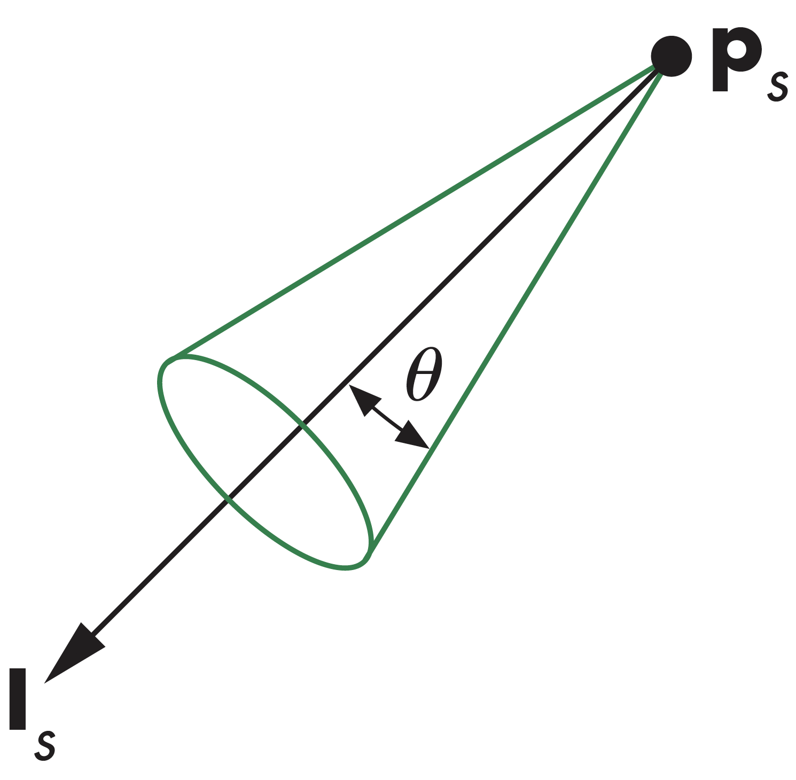
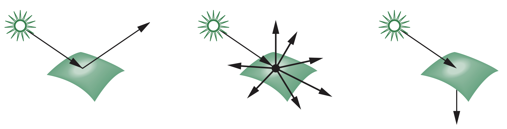
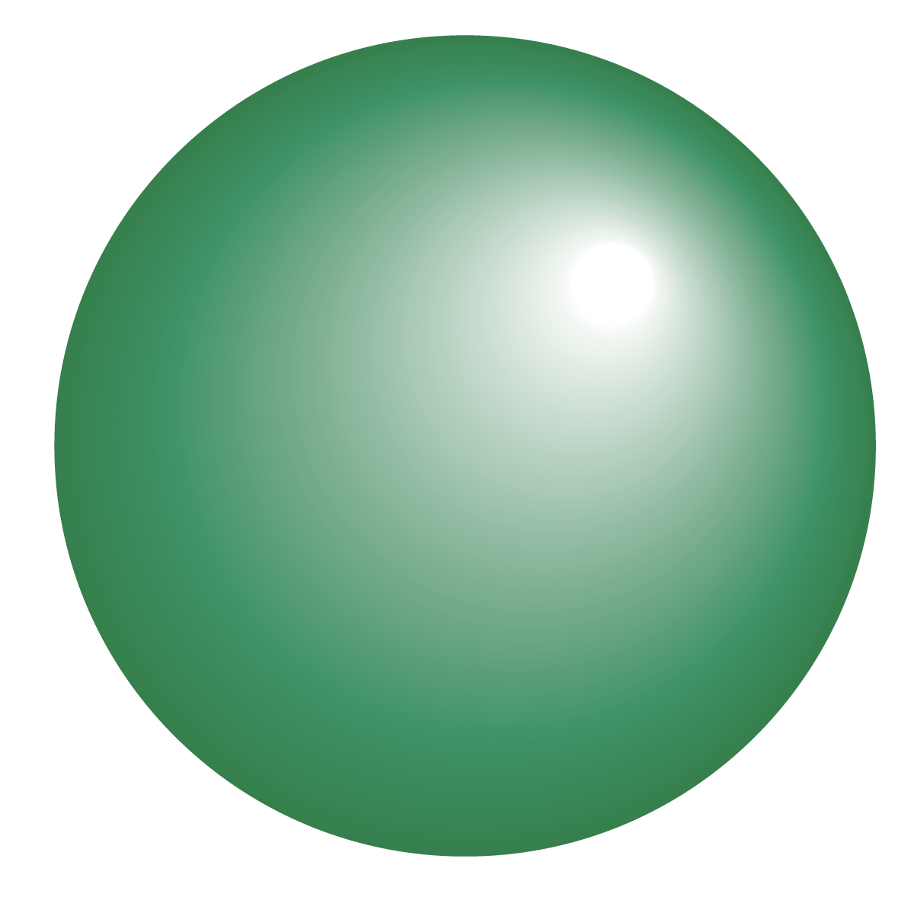
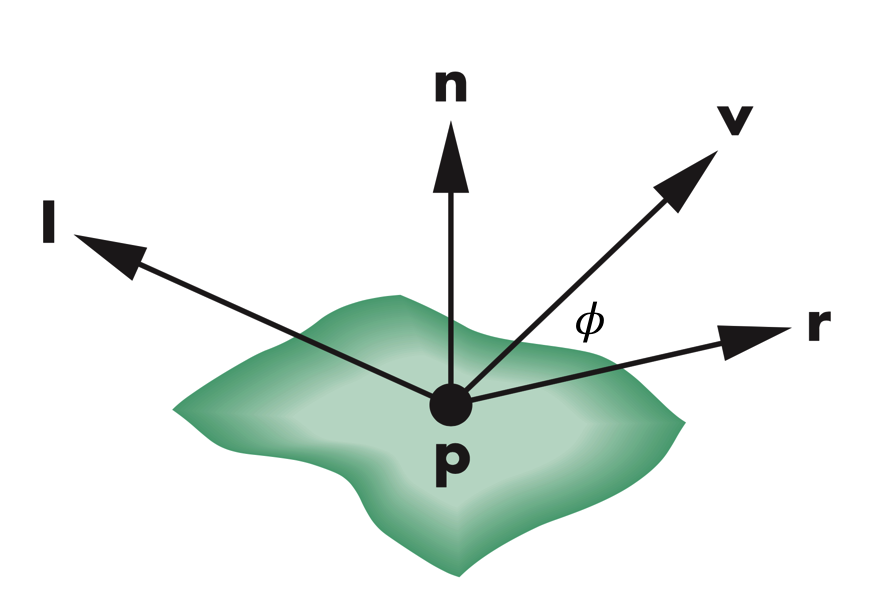

计算机图形学
第六章 光和着色
光照模型
李懿
医学技术学院
浙江中医药大学
光照模型
着色


光、材质、观察者的位置、物体表面的方向等属性决定了在光照条件下当前物体表面上每个点都会呈现不同的颜色，便利物体看起来更具真实感
光照模型
光的散射

当光线入射到A，部分被吸收，部分被散射，散射光线入到到B，又发生部分被吸收，部分被散射，循环往复
光照模型
渲染等式
光线在物体之间无限的吸收、散射过程可以用渲染公式描述，但一般无解，光线跟踪是一种考虑全反射表面的特殊形式
渲染等式计算的是全局光照，其中包含了阴影和物体之间的多重散射
光照模型
局部渲染和全局渲染
正确的着色需要考虑包含所有物体对象和光源的全局计算，这不符合当前流水线中对单个多边形分别计算颜色的模式不符
不过，在计算机图形学中，尤其是实时图形学计算，只需要”看起来正确”的结果，因此，可以有很多技术模拟这种效果
光照模型
光线和材质
当光线照射到物体时，部分光线会被吸收，部分光线会被反射，其反射光线量取决于物体的颜色和亮度，比如在白光照射下呈现红色的表面，是因为在物体表面红色光线被反射，而其它颜色则被吸收。
反射光线的散射方向取决于物体表面的光滑度及表面的朝向
光照模型
光源

光照模型
简化光源-点光源
点光源，有位置和颜色信息


当点光源的距离位于无限远处
光照模型
简化光源-聚光灯
聚光灯将光限制在一个区域中
光照模型
简化光源-环境光
环境中所有位置的光强均相同，可用于模拟环境中多个光源和反射表面的效果
光照模型
表面类型
物体表面越平滑，反射光线越集中在镜面反射方向，而越粗糙的表面往各个方向散射的光线就越多
光照模型
Phong光照模型
Phong模型是一个简单的光照模型，适用于快速计算。其中的光，有三个成分，分别为
- 漫反射光(Diffuse)
- 高光(Specular)
- 环境光(Ambient)
用到四个向量，分别是
- 光源向量($\mathbf{l}$)
- 观察者向量($\mathbf{v}$)
- 法向量($\mathbf{n}$)
- 全反射向量($\mathbf{r}$)

光照模型
理想反射面
理想反射面，法向量由局部平面所处方向决定，光线入射角与反射角相等，同时三个向量，入射光向量、法线向量和全反射向量須共面
$$ \mathbf{r}=2(\mathbf{l}\cdot \mathbf{n})\mathbf{n}-\mathbf{l} $$

光照模型
朗伯表面
朗伯表面(Lambertian Surface)是一种理想的漫反射表面，光线均匀地向各个方向散射。反射的光强度与入射光在垂直方向上强度呈线性关系，即
- 反射光强度与$\cos{\theta_i}$呈线性关系
- 若向量已正则化，有$\cos{\theta_i}=\mathbf{I}\cdot\mathbf{n}$
- 三个系数$k_r, k_g, k_b$分别对应光中三种颜色分量的反射系数
光照模型
高光表面
大多数平面既非理想的漫反射表面，也非理想的镜面。平滑表面会在接近于镜面反射方向反射入射光，形成高光
光照模型
建模高光反射
Phong模型以一个变量表示反射光强，当观察者与全反射角之间的角度增大时，反射光强度会减小，即有$l_{ref} \sim k_sl\cos^{\alpha}{\phi}$, 其中$l_{ref}$指代反射强度，$k_s$为光反射系数，其值介于0和1之间，表明有多少光被反射，$l$为入射光强度，$\cos^{\alpha}{\phi}$为Phong模型中定义的闪光系数，$\phi$为观察者与全反射方向之间的夹角
光照模型
闪光系数
- 当$\alpha$无限趋近于正无穷时，对应于镜面材质
- 当$\alpha$值界于100到200之间，对应于金属材质
- 当$\alpha$值界于5到10之间时，对应于塑料材质
光照模型
环境光
环境光是光源和环境中的物体进行多次交互后产生的结果，其强度取决于光的颜色和物体的材质属性
需要在相应光的漫反射和高光分量上分别加上$k_al_a$，其中$k_a$为环境光反射系数，$l_a$为环境光强度
光照模型
距离因子
光线在从光源到目标物体过程中，随着距离的增加，其强度衰减为距离的平方，即有衰减因子$k_r\sim \frac{1}{a+bd+cd^2}$，其中$d$即为距离，计算光照模型时，需要将该因子也加入到算式中
光照模型
光源和材质
Phong模型中，将光源加入到算式中，有每个光源都有独立的漫反射、高光反射和环境光分量用于独立计算，每种分量又可进一步分解成红、绿、蓝三种颜色分量，因此每个光源都有$l_{dr}, l_{dg}, l_{db}, l_{sr}, l_{sg}, l_{sb}, l_{ar}, l_{ag}, l_{ab}$九个分量
同样，对于物体的材质，也与光源性质相类似，分别对应于三种光源三种颜色分量的吸收性质，有$k_{dr}, k_{dg}, k_{db}, k_{sr}, k_{sg}, k_{sb}, k_{ar}, k_{ag}, k_{ab}$，除外，还有材质的闪光系数$\alpha$
光照模型
Phong模型计算式
将前述各分量相加，得到Phong模型的计算式，对于每一个光源，都有下式
$$
I=\frac{1}{a+bd+cd^2}(k_dl_d\mathbf{I}\cdot \mathbf{n} + k_sl_s(\mathbf{v}\cdot \mathbf{r})^{\alpha}）+ k_al_a\mathbf{n}
$$
将场景中所有的光源相加，即可得到完整的光照效果计算式
光照模型
改进Phong模型
Phong模型中高光分量的计算需要先计算每个顶点的观察向量$\mathbf{v}$和新的反射向量$\mathbf{r}$，Blinn提出了一种改进Phong模型，能够更有效地计算这些向量，其方法利用了半路向量(halfway vector)
$$ h=\frac{(l+v)}{|l+v|} $$

光照模型
利用半路向量
将原公式中$(\mathbf{v}\cdot\mathbf{r})^\alpha$替代为$(\mathbf{n}\cdot\mathbf{h})^\beta$，其中$\beta$的值依据闪光系数设定
半路向量和$\mathbf{r}$和$\mathbf{v}$是共面的，为二者中间的向量，用半路向量替代后的模型称为改进Phong模型或Phong-Blinn光照模型
光照模型
示例

光照模型
计算向量
利用半路向量计算Phong模型，计算各向量，有
- $l$和$v$由应用程序给出
- 根据$l$和$n$可以计算$r$
- 关键在计算平面法向量$n$，法向量取决于平面在程序中的表示，OpenGL中由用户程序计算法向量
光照模型
计算反射方向
根据光的反射，入射角等于反射角，将向量正则化后，可以得到
$$ \mathbf{r}=2(\mathbf{l}\cdot \mathbf{n})\mathbf{n}-\mathbf{l} $$
光照模型
平面法向量
给定平面方程$ax+by+cz+d=0$，对平面上任意三点$p_0,p_1,p_2$，可以计算得到平面法线为 $$ \mathbf{n}=(p_2-p_0)\times (p_1-p_0) $$
光照模型
球面法线
球面有隐函数$f(x,y,z)=0$或者以向量形式有$f(\mathbf{p})=\mathbf{p}\cdot\mathbf{p}-1=0$，其表面法线由导数给出。即有 $$ \mathbf{n}=\begin{bmatrix} \frac{\partial{f}}{\partial{x}}\\ \frac{\partial{f}}{\partial{y}}\\ \frac{\partial{f}}{\partial{z}} \end{bmatrix} =2\mathbf{p} $$

光照模型
参数形式
对球有方程
$$
\begin{cases}
x=x(u,v)=\cos{u}\sin{v}\\
y=y(u,v)=\cos{u}\cos{v}\\
z=z(u,v)=\sin{u}
\end{cases}
$$
则由向量确定的切平面有
$$
\frac{\partial{\mathbf{p}}}{\partial{u}}=\begin{bmatrix}\frac{\partial{x}}{\partial{u}}\\ \frac{\partial{y}}{\partial{u}}\\ \frac{\partial{z}}{\partial{u}}\end{bmatrix},
\frac{\partial{\mathbf{p}}}{\partial{v}}=\begin{bmatrix}\frac{\partial{x}}{\partial{v}}\\
\frac{\partial{y}}{\partial{v}}\\ \frac{\partial{z}}{\partial{v}}\end{bmatrix}
$$
法线可以由叉乘得到
$$
\mathbf{n}=\frac{\partial{\mathbf{p}}}{\partial{u}}\times \frac{\partial{\mathbf{p}}}{\partial{v}}
$$
光照模型
一般情况
对其它的简单情况，如干净曲面、参数多项式曲面等，都可以根据参数计算表面法向量